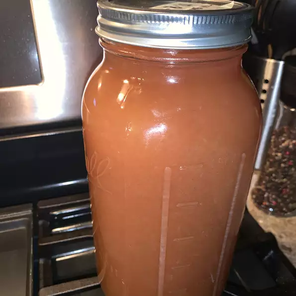

Apple Cider
Description
This apple cider recipe is easy to make at home without an apple press.
Cider may be frozen for longer storage.

Ingredients
- 10 large apples, quartered
- water, to cover
- ¾ cup white sugar
- 1 tablespoon ground cinnamon
- 1 tablespoon ground allspice
Steps
-
Place apples in a large stockpot; cover with water by at least 2 inches.
Stir in sugar, cinnamon, and allspice. Bring to a boil over medium-high heat.
Boil, uncovered, for 1 hour. Reduce heat; cover and simmer for 2 hours.
-
Strain apple mixture through a fine-mesh sieve; discard solids.
Drain cider again through a cheesecloth-lined sieve.
-
Refrigerate cider until cold, about 4 hours.